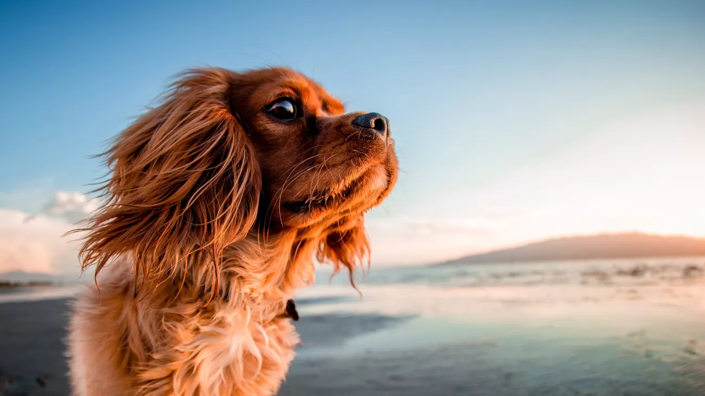
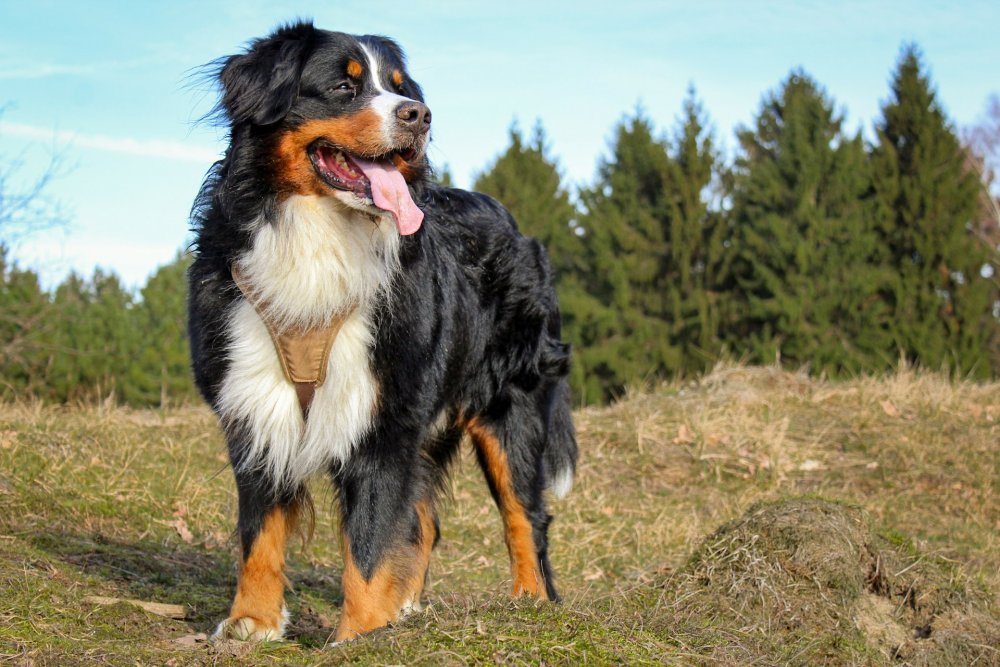

Biggy

- Věk: 5 let
- Pohlaví: fenka
- Velikost: střední
- Popis: Biggy je společenská, klidná a hodí se k dětem.
Bufy

- Věk: 4 roky
- Pohlaví: pes
- Velikost: velký
- Popis: Bufy se hodí k lidem, kteří mají zahradu.Je velice aktivní a zbožňuje hračky.
Bernie

- Věk: 6 let
- Pohlaví: pes
- Velikost: velký
- Popis: Bernie je aktivní, vychovaný, ale je vhodný pro zkušeného pejskaře.
Roxie

- Věk: 7 let
- Pohlaví: fenka
- Velikost: malá
- Popis: Roxie je klidná, hodí se spíše k starším lidem a je to velká mazlivka.
Barny

- Věk: 2 měsíce
- Pohlaví: fenka
- Velikost: střední ( v dospělosti )
- Popis: Barny potřebuje spoustu lásky, hodí se k dětem a miluje pamlsky.
Cookie

- Věk: 2 měsíce
- Pohlaví: fenka
- Velikost: velký ( v dospělosti )
- Popis: Cookie miluje hračky a procházky. Hodí se k dětem a na zahradu.
Roxy

- Věk: 3 roky
- Pohlaví: fenka
- Velikost: malá
- Popis: Roxy miluje procházky v lese, je vycvičená, ale nehodí se k dětem.
Brit

- Věk: 3 měsíce
- Pohlaví: pes
- Velikost: velký ( v dospělosti )
- Popis: Brit má rád míčky a zbožňuje trhání plyšáků. Hodí se do rodiny.
Šmidla

- Věk: 5 let
- Pohlaví: fenka
- Velikost: střední
- Popis: Šmidla je velice zvídavá a ráda cestuje. Miluje spánek a umí základní povely ( sedni, lehni, dej pac ).
Daisy

- Věk: 7 let
- Pohlaví: fenka
- Velikost: velký
- Popis: Daisy si velice oblíbila dlouhé procházky. Má ráda ostaní psí kamarády, ale také svůj klid.